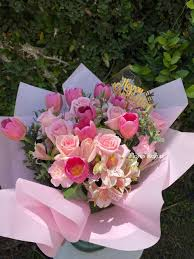
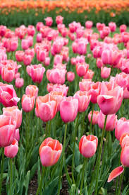

Historia de Flores

Las rosas son una de las flores más antiguas y apreciadas de la historia. Su cultivo se remonta a miles de años,
siendo símbolo de amor, elegancia y belleza. A lo largo del tiempo, han inspirado poemas, arte y han sido la base
de los arreglos florales más tradicionales en el mundo.
Principios Básicos para Arreglos Florales
- Seleccionar flores frescas para garantizar mayor duración del arreglo.
- Elegir un diseño equilibrado donde colores y formas combinen armónicamente.
- Recortar los tallos en diagonal para mejorar la absorción del agua.
- Utilizar espuma floral o bases adecuadas según el tipo de arreglo.
- Mantener el arreglo hidratado para conservar su belleza.
- Evitar mezclar flores que emitan sustancias dañinas entre sí.
Tipos de Arreglos Florales
- Arreglos en jarrón: ideales para decorar interiores.
- Ramos: perfectos para obsequios en ocasiones especiales.
- Centros de mesa: utilizados en eventos y celebraciones.
- Arreglos verticales: destacan por su elegancia y altura.
Flores Más Recocnocidas
